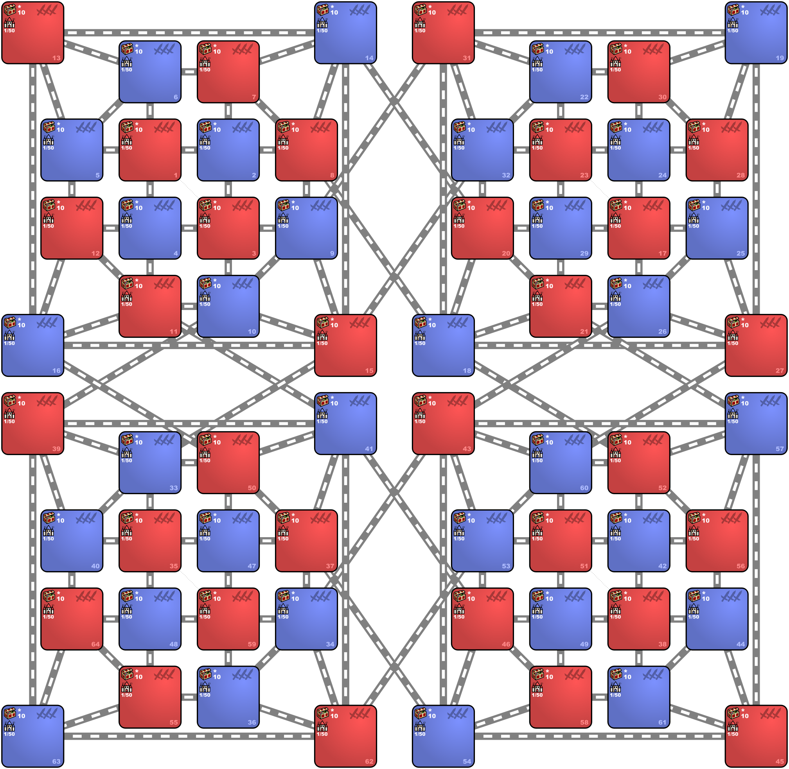

Practically no fights vs neutrals to speed up the game. Lots of portals though.
You will fight on MANY fronts from the get go.
By Warzyw
Last update: 29.01.2024

Settings
For the rest of the settings, pick one of these 2 settings variants:
Chaotic Variant:
Slower variant:
Technical datails that you can get from the Template Editor
| Index | Zones | Min | Max | Density | Min | Max | Density | Min | Max | Density |
|---|---|---|---|---|---|---|---|---|---|---|
| 10 | All zones | 1000 | 1000 | 10 |
| Zone | Monsters disposition |
|---|
| Zone | Percentage of monsters joining |
|---|
| Zone |
|---|
| Rule Type | Object | Value | Frequency | Max per Zone |
|---|---|---|---|---|
| Disable | every object | |||
| Enable / Edit | Warehouse of Wood | 1000 | 50 | default |
| Enable / Edit | Warehouse of Ore | 1000 | 50 | default |
| Enable / Edit | Warehouse of Mercury | 1000 | 40 | default |
| Enable / Edit | Warehouse of Sulfur | 1000 | 40 | default |
| Enable / Edit | Warehouse of Crystal | 1000 | 40 | default |
| Enable / Edit | Warehouse of Gem | 1000 | 40 | default |
| Enable / Edit | Warehouse of Gold | 1000 | 30 | default |
| Enable / Edit | Scholar | 1000 | 20 | default |
| Enable / Edit | Spell Scroll — Level 5 | 1000 | 5 | default |
| Enable / Edit | Spell Scroll — Level 4 | 1000 | 5 | default |
| Enable / Edit | Spell Scroll — Level 3 | 1000 | 5 | default |
| Enable / Edit | Spell Scroll — Level 2 | 1000 | 5 | default |
| Enable / Edit | Spell Scroll — Level 1 | 1000 | 5 | default |
| Enable / Edit | Random Major Artifact | 1000 | 10 | default |
| Enable / Edit | Random Minor Artifact | 1000 | 10 | default |
| Enable / Edit | Magic Well | 1000 | 5 | default |
| Rule Type | Object | Value | Frequency | Max per Zone |
|---|---|---|---|---|
| Disable | every object | |||
| Enable / Edit | Warehouse of Wood | 1000 | 50 | default |
| Enable / Edit | Warehouse of Ore | 1000 | 50 | default |
| Enable / Edit | Warehouse of Mercury | 1000 | 40 | default |
| Enable / Edit | Warehouse of Sulfur | 1000 | 40 | default |
| Enable / Edit | Warehouse of Crystal | 1000 | 40 | default |
| Enable / Edit | Warehouse of Gem | 1000 | 40 | default |
| Enable / Edit | Warehouse of Gold | 1000 | 30 | default |
| Enable / Edit | Scholar | 1000 | 20 | default |
| Enable / Edit | Spell Scroll — Level 5 | 1000 | 5 | default |
| Enable / Edit | Spell Scroll — Level 4 | 1000 | 5 | default |
| Enable / Edit | Spell Scroll — Level 3 | 1000 | 5 | default |
| Enable / Edit | Spell Scroll — Level 2 | 1000 | 5 | default |
| Enable / Edit | Spell Scroll — Level 1 | 1000 | 5 | default |
| Enable / Edit | Random Major Artifact | 1000 | 10 | default |
| Enable / Edit | Random Minor Artifact | 1000 | 10 | default |
| Enable / Edit | Magic Well | 1000 | 5 | default |
| Enable / Edit | Obelisk | 1000 | 10 | no limit |